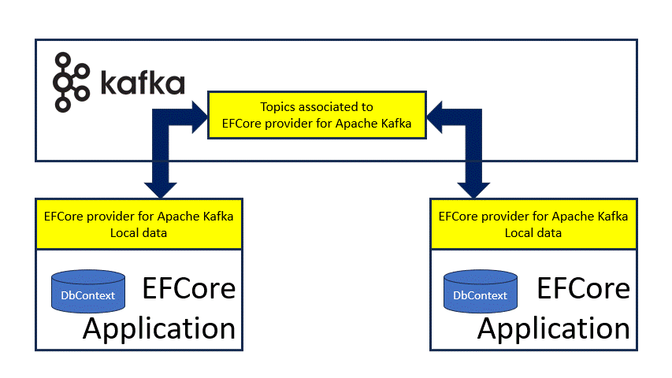
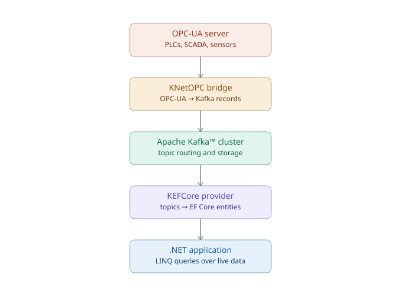

KEFCore: use cases
Entity Framework Core provider for Apache Kafka™ can be used in some operative conditions. Here a possible, non exhaustive list, of use cases.
Before read following chapters it is important to understand how it works.
Apache Kafka™ as Database
Important
The concept of database is not related to any ACID behavior of the provider.
The first use case can be coupled to a standard usage of Entity Framework Core, the same when it is used with database providers.
In getting started is proposed a simple example following the online documentation.
In the example the data within the model are stored in multiple Apache Kafka™ topics, each topic is correlated to the DbSet described from the DbContext as described in how it works.
The constraints are managed using OnModelCreating of DbContext.
A different way to define data within Apache Kafka™ topics
Changing the mind about model, another use case can be coupled on how an Entity Framework Core model can be used. Starting from the model proposed in getting started, the data within the model are stored in multiple Apache Kafka™ topics. If the model is written in a way it describes the data to be stored within the topics it is possible to define an uncorrelated model containing the data of interest:
public class ModelContext : KafkaDbContext
{
public DbSet<FirstData> FirstDatas { get; set; }
public DbSet<SecondData> SecondDatas { get; set; }
}
public class FirstData
{
public int ItemId { get; set; }
public string Data { get; set; }
}
public class SecondData
{
public int ItemId { get; set; }
public string Data { get; set; }
}
Then using standard APIs of Entity Framework Core, an user interacting with Entity Framework Core can stores, or retrieves, data without any, or limited, knowledge of Apache Kafka™.
Apache Kafka™ as distributed cache
Changing the mind a model is written for, it is possible to define a set of classes which acts as storage for data we want to use as a cache. It is possible to build a new model like:
public class CachingContext : KafkaDbContext
{
public DbSet<Item> Items { get; set; }
}
public class Item
{
public int ItemId { get; set; }
public string Data { get; set; }
}
Sharing it between multiple applications and allocating the CachingContext in each application, the cache is shared and the same data are available.
Apache Kafka™ as a triggered distributed cache
Continuing from the previous use case, using the events reported from Entity Framework Core provider for Apache Kafka™ it is possible to write a reactive application. When a change event is triggered the application can react to it and take an action.

SignalR
The triggered distributed cache can be used side-by-side with SignalR: combining Entity Framework Core provider for Apache Kafka™ and SignalR in an application, subscribing to the change events, it is possible to feed the connected applications to SignalR.
KEFCore vs Redis
The triggered distributed cache can be seen as a Redis backend. Here below some differences between them and when KEFCore can be used.
Use KEFCore When You Need:
✅ Complex Object Persistence Store and query deeply nested objects with LINQ. No manual serialization required.
✅ Structured Data Sharing Share complex configuration, catalogs, and reference data across microservices with automatic synchronization.
✅ Durable Distributed Cache Multi-region deployment with Kafka replication. All data is durable and recoverable.
✅ Change Event Triggers React to data changes across your distributed system. Perfect for SignalR, workflow triggers, and reactive apps.
✅ Schema Evolution Avro and Protobuf support for forward/backward compatibility.
Use Redis When You Need:
✅ Atomic Operations INCR, DECR, and other atomic primitives for counters and rate limiting.
✅ Sub-Millisecond Latency Pure in-memory cache for extreme performance requirements.
✅ Native Data Structure Operations Sorted sets for leaderboards, sets for uniqueness, lists for queues.
✅ Per-Key TTL Individual expiration times for cache entries.
Can You Use Both?
Yes!:
- Redis: Hot cache, rate limiting, session store
- KEFCore: Durable shared state, complex data, cross-region sync
They complement each other.
Industry 4.0: OPC-UA data via KNetOPC
KNetOPC is a bridge that connects OPC-UA industrial data sources to Apache Kafka™ topics. Combined with KEFCore, it enables querying real-time industrial data using standard Entity Framework Core LINQ APIs — without any knowledge of OPC-UA protocols or Kafka internals.
Pipeline overview

Mapping OPC-UA types to EF Core entities
OPC-UA nodes can be mapped to EF Core entities using ComplexType to represent structured OPC-UA values.
The TypeId/Body pair used by the OPC-UA encoding is preserved as a ComplexType property, allowing the original OPC-UA type to be reconstructed on read:
public class OpcUaReading
{
public string NodeId { get; set; } // PK — OPC-UA node identifier
public DateTime Timestamp { get; set; }
public OpcUaValue Value { get; set; } // ComplexType
}
[KEFCoreComplexTypeConverterAttribute(typeof(OpcUaValueConverter))]
public class OpcUaValue : IEquatable<OpcUaValue>
{
public string TypeId { get; set; }
public string Body { get; set; } // JSON-encoded OPC-UA body
public bool Equals(OpcUaValue other)
=> TypeId == other?.TypeId && Body == other?.Body;
public override bool Equals(object obj)
=> Equals(obj as OpcUaValue);
public override int GetHashCode()
=> HashCode.Combine(TypeId, Body);
}
Querying industrial data with LINQ
Once the model is defined and KEFCore is configured against the topics produced by KNetOPC, standard EF Core queries work transparently:
// Latest readings above threshold for a specific sensor
var alerts = await context.OpcUaReadings
.Where(r => r.NodeId == "ns=2;s=Temperature"
&& r.Timestamp > DateTime.UtcNow.AddMinutes(-5))
.OrderByDescending(r => r.Timestamp)
.ToListAsync();
Why this combination is useful
- ✅ No OPC-UA protocol knowledge required — engineers query industrial data using familiar C# and LINQ
- ✅ Real-time alignment — KEFCore's event management keeps the local state synchronized with the Kafka topics as new OPC-UA readings arrive
- ✅ Decoupled architecture — OPC-UA sources, Kafka, and the .NET application are independently scalable
- ✅ ComplexType support — structured OPC-UA values are preserved with their type information for correct deserialization
- ✅ Change event triggers — react to threshold breaches or anomalies using KEFCore's event pipeline, feeding dashboards or alerting systems
Note
The ApplicationId used by KEFCore must be unique per process on the same Kafka cluster. When multiple applications consume the same KNetOPC topics, each should use a distinct ApplicationId to maintain a complete local view of all partitions.
Data processing out-side Entity Framework Core application
The schema used to write the information in the topics are available, or can be defined from the user, so an external application can use the data in many mode:
- Using the feature to extract the entities stored in the topics outside the application based on Entity Framework Core
- Use some features of Apache Kafka™ like Apache Kafka™ Streams or Apache Kafka™ Connect.
External application
An application, not based on Entity Framework Core, can subscribe to the topics to:
- store all change events to another medium
- analyze the data or the changes
- and so on
Apache Kafka™ Streams
Apache Kafka™ comes with the powerful Streams feature. An application based on Streams can analyze streams of data to extract some information or converts the data into something else. It is possible to build an application, based on Apache Kafka™ Streams, which hear on change events and produce something else or just sores them in another topic containing all events not only the latest (e.g. just like the transaction log of SQL Server does it).
Apache Kafka™ Connect
Apache Kafka™ comes with another powerful feature called Connect: it comes with some ready-made connector which connect Apache Kafka™ with other systems (database, storage, etc). There are sink or source connectors, each connector has its own specificity:
- Database: the data in the topics can be converted and stored in a database
- File: the data in the topics can be converted and stored in one, or more, files
- Other: there are many ready-made connectors or a connector can be built using a Connect SDK
NOTE: While Apache Kafka™ Streams is an application running alone, Apache Kafka™ Connect can allocate the connectors using the distributed feature which load-balance the load and automatically restarts operation if something is going wrong.